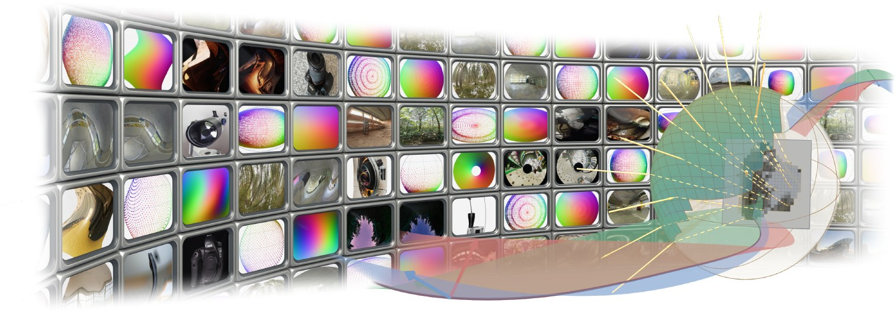
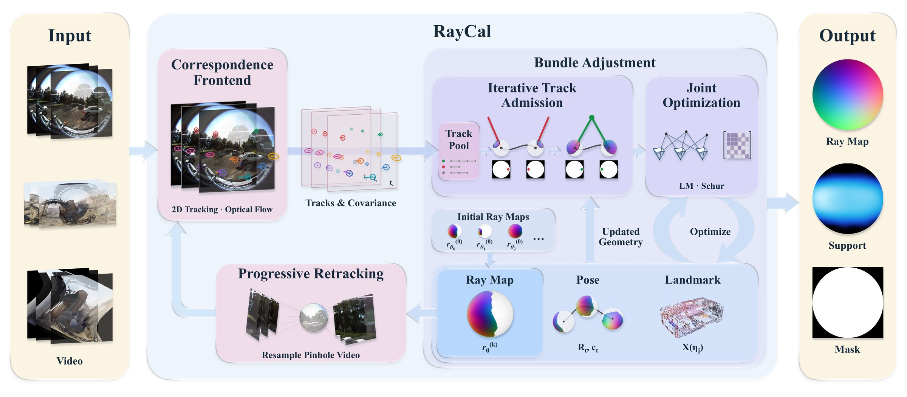
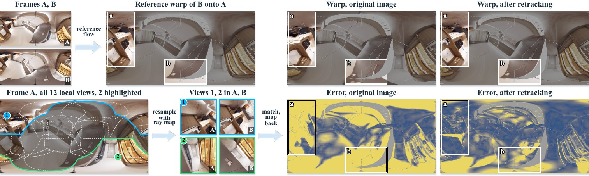
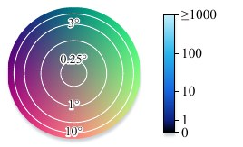
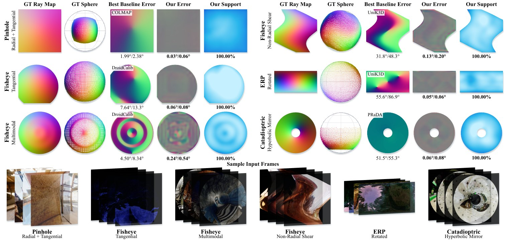
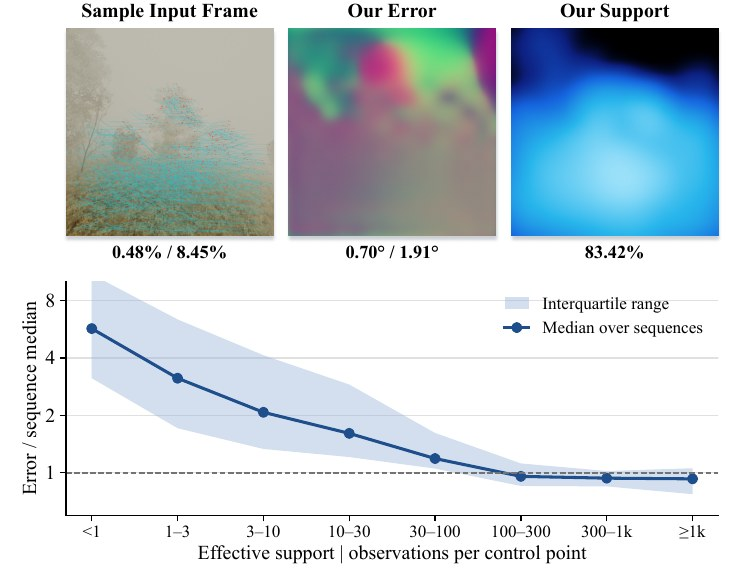

Abstract
We present RayCal, a target-free calibration framework that recovers any central camera's ray map from tens of video frames without restricting the camera motion. Instead of a parametric lens model, the ray map is a continuous pixel-to-ray mapping that accommodates arbitrary smooth, invertible distortion. RayCal jointly optimizes the ray map, camera poses and 3D landmarks from pretrained dense correspondences. Such matchers degrade under strong distortion, yet removing the distortion requires the calibration itself. Our key insight is that tracking and calibration can improve each other from an imperfect start: Progressive Retracking resamples the video through the current ray map into less distorted pinhole views, where the matcher tracks more accurately, and the new tracks in turn refine the ray map. Within the optimization, Iterative Track Admission likewise re-tests previously rejected tracks as the geometry improves. We also provide support maps that show where the calibration is well constrained and where more observations would help. Across pinhole, fisheye, panoramic and catadioptric cameras under highly complex distortion, RayCal reaches mean angular errors as low as 0.02° and reduces error by up to an order of magnitude over state-of-the-art baselines.
Method


Results Explorer
Every sequence of the benchmark, with the same results as the paper's tables. Each row shows four example frames of the input video, the ground-truth ray sphere and ray map, the angular error of the best baseline on that sequence and of RayCal (after one global rotation), and RayCal's effective support.

Error: hue gives the direction, saturation the magnitude (rings at 0.25°, 1°, 3°, 10°). Support: effective support, observations per control point (log).Scroll inside the box to browse the sequences.
Qualitative Comparison


Citation
@article{yu2026raycal,
title = {RayCal: Calibrating Generic Ray Models for Any Camera from Video in the Wild},
author = {Yu, Mukai and Fei, Xiang and Wietzke, Anton and Wang, Wenshan and Jeni, L{\'a}szl{\'o} A. and Scherer, Sebastian},
journal = {arXiv preprint},
year = {2026}
}